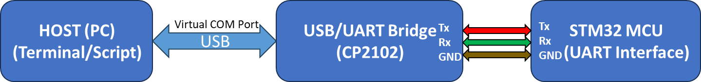
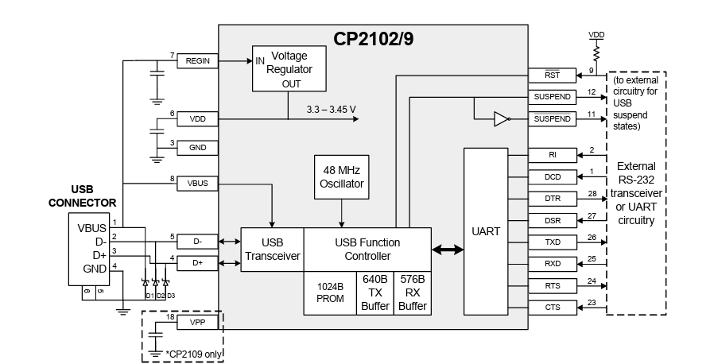
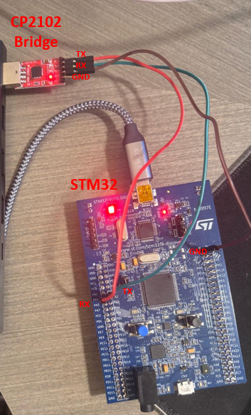
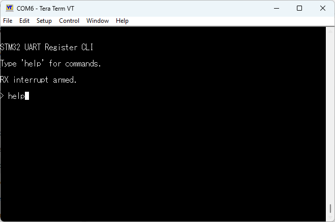
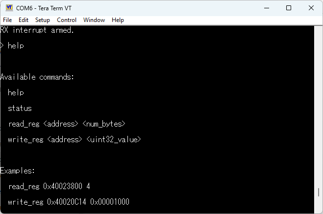
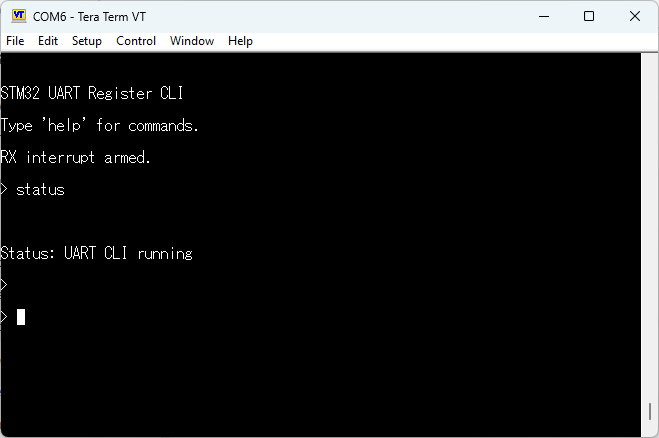
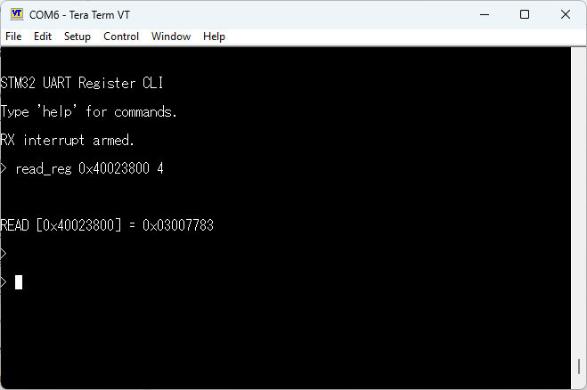
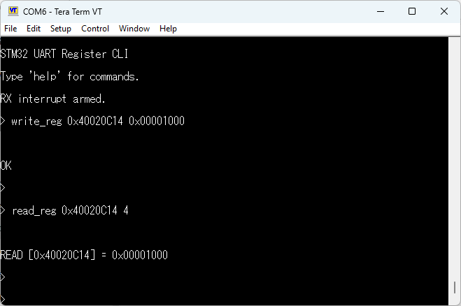

May 3, 2026
Problem & Motivation
As I started diving deeper into hands-on embedded systems development, I enrolled in an Embedded C course that recommended using an STM32 development board to fully engage with the material.
To support this, I used the STM32F407G-DISC1, a widely used evaluation board from STMicroelectronics. It is built around the STM32F407VG, a Cortex-M4 MCU running at up to 168 MHz. The board includes a rich set of peripherals such as GPIO, timers, ADC and DAC, SPI, I²C, USART, USB OTG, and onboard debugging via ST-LINK. While UART functionality is available through the GPIO pins, the board does not provide a built-in runtime console or command interface, so interaction is typically done by reflashing firmware or building custom tools.
While ST provides an excellent ecosystem for firmware development, especially with tools like STM32CubeIDE, interacting with the board during development quickly became cumbersome. Every small change required recompiling, reflashing, and re-running the code, which significantly slowed down iteration and debugging.
This friction stood out to me because in nearly every professional system I have worked on, there was some form of runtime interface, usually a command-line console or API, that allowed direct interaction with the firmware without needing to reflash it each time. These interfaces are extremely valuable for debugging, testing, and basic control during development.
That led to a simple question. Why not build something similar for this dev board?
Out of the box, my board does not provide such an interface. However, it does expose flexible GPIOs that can be configured for different communication protocols. That realization became the starting point for this project. I used a UART interface to create a simple and extensible console for interacting with the MCU in real time. Even with limited experience at the time, this approach proved so useful that a similar mechanism has since become a standard part of nearly every project I have worked on.
A Quick Note on UART
Universal Asynchronous Receiver Transmitter, or UART, is a simple and widely used communication protocol in embedded systems. It enables asynchronous serial communication between two devices using separate transmit (TX) and receive (RX) lines, along with a shared ground reference. Data is sent one bit at a time at a predefined baud rate, without the need for a shared clock signal.
In practice, UART is often used for debugging and device control due to its simplicity and low overhead. However, modern computers no longer expose native UART interfaces, which makes direct communication with microcontrollers less straightforward. This gap is commonly addressed using USB-to-UART converters, allowing UART-based systems to interface with standard USB ports.

Solution
To implement this interface in a practical and accessible way, I used an off-the-shelf USB-to-UART converter module based on the CP2102. In this configuration, the module acts as a bridge between the host computer and the MCU by translating USB communication into standard UART signals and vice versa.
On the host side, the device connects over USB and is enumerated as a virtual COM port through vendor-provided drivers. This allows any standard serial terminal or script to communicate with the device as if it were a traditional serial interface. Internally, the CP2102 handles all USB protocol complexity, including packetization, buffering, and timing, and exposes a simple asynchronous UART interface on its TX and RX pins.
On the hardware side, the module used in this project exposes a minimal 5-pin interface consisting of TXD, RXD, GND, VCC, and optionally control signals. The TX and RX lines are connected directly to the corresponding UART pins on the STM32, forming a full-duplex communication channel. The module is powered either directly from the USB connection or through the target system, depending on the configuration.
Functionally, this creates a transparent bridge: data sent from a terminal on the host is converted by the CP2102 into UART frames and delivered to the MCU, while responses from the MCU are transmitted back over UART, converted into USB packets, and presented to the host as serial data. This abstraction allows the firmware to operate purely in terms of UART communication, without any need to handle USB protocol details.

System Architecture
The system consists of three main components: the host machine, the USB-to-UART bridge, and the STM32 microcontroller. Communication flows from the host over USB, is translated into UART by the bridge, and is then processed by the MCU.
As shown in Figure 3, the host communicates with the CP2102 over USB, where it appears as a virtual COM port. The bridge converts this communication into UART signals, exposing TX and RX lines to the MCU.
The TX pin of the bridge is connected to the RX pin of the MCU, while the RX pin is connected to the TX pin, forming a full-duplex communication channel. Both devices share a common ground reference, and the CP2102 module and STM32 operate at compatible logic levels, allowing direct connection without level shifting.
The UART interface is configured at 115200 baud, 8 data bits, no parity, and 1 stop bit (8N1), matching the configuration used by the host terminal.

This setup provides a transparent communication channel between the host and the firmware, forming the foundation for the command interface described in the following sections.
Firmware Architecture
On the firmware side, the system is structured around a UART-based command interface that operates alongside the main application. Incoming data is received over the UART peripheral and stored in a buffer, typically byte-by-byte using interrupts, though polling is also possible. Once a complete command is detected, the data is passed to a lightweight command parser that interprets the input and extracts the relevant command and arguments.
The parsed command is then dispatched to a corresponding handler function responsible for executing the requested action, such as toggling peripherals, reading system state, or modifying runtime parameters. After execution, a response is formatted and transmitted back to the host over UART, providing immediate feedback through the terminal interface.
This layered structure separates communication, parsing, and execution logic, making the interface easy to extend with additional commands while maintaining clarity and modularity within the firmware. It also mirrors patterns commonly used in production embedded systems.
Implementation Details
To demonstrate the usefulness of the UART interface, I implemented a small command-line interface that allows direct interaction with the STM32 at runtime through a serial terminal. The firmware receives characters over UART, stores them in a command buffer, and processes the command once the user presses Enter.
#define UART_RX_BUFFER_SIZE 128
extern UART_HandleTypeDef huart2; // UART handle generated by CubeMX
static uint8_t uart_rx_byte;
static char cmd_buffer[UART_RX_BUFFER_SIZE];
static volatile uint16_t cmd_index = 0;
static volatile uint8_t cmd_ready = 0;The UART receive path is interrupt-based. Each received byte is added to the command buffer until a newline or carriage return is detected. At that point, the command is marked as ready for processing by the main loop.
HAL_UART_Receive_IT(&huart2, &uart_rx_byte, 1);void HAL_UART_RxCpltCallback(UART_HandleTypeDef *huart)
{
if (huart->Instance == huart2.Instance)
{
char c = (char)uart_rx_byte;
if (c == '\r' || c == '\n')
{
if (cmd_index > 0)
{
cmd_buffer[cmd_index] = '\0';
cmd_ready = 1;
}
}
else
{
if (cmd_index < UART_RX_BUFFER_SIZE - 1)
{
cmd_buffer[cmd_index++] = c;
}
else
{
cmd_index = 0;
}
}
HAL_UART_Receive_IT(&huart2, &uart_rx_byte, 1);
}
}Once a complete command is received, the main loop passes it to the command processor. After the command is handled, the buffer is cleared and the prompt is printed again.
while (1)
{
if (cmd_ready)
{
cmd_ready = 0;
process_command(cmd_buffer);
cmd_index = 0;
memset(cmd_buffer, 0, sizeof(cmd_buffer));
uart_print("> ");
}
}A small helper function is used to transmit responses back to the host terminal. This keeps the command handlers cleaner and avoids repeating the UART transmit call throughout the code.
static void uart_print(const char *msg)
{
HAL_UART_Transmit(&huart2, (uint8_t *)msg, strlen(msg), HAL_MAX_DELAY);
}The command processor splits the received string into arguments and dispatches it based on the command name. This makes the interface easy to extend, since new commands can be added as additional handler branches.
static uint32_t parse_u32(const char *str)
{
return (uint32_t)strtoul(str, NULL, 0); // Supports decimal and 0x hex
}
static void process_command(char *cmd)
{
char *argv[4];
int argc = 0;
char *token = strtok(cmd, " ");
while (token != NULL && argc < 4)
{
argv[argc++] = token;
token = strtok(NULL, " ");
}
if (argc == 0)
{
return;
}
if (strcmp(argv[0], "help") == 0)
{
uart_print("Available commands:\r\n");
uart_print(" help\r\n");
uart_print(" read_reg <address> <num_bytes>\r\n");
uart_print(" write_reg <address> <uint32_value>\r\n");
return;
}
uart_print("Unknown command. Type 'help'.\r\n");
}The read_reg command allows the user to inspect STM32 memory-mapped registers directly. The command format is read_reg <address> <num_bytes>, where num_bytes can be 1, 2, or 4.
if (strcmp(argv[0], "read_reg") == 0)
{
if (argc != 3)
{
uart_print("Usage: read_reg <address> <num_bytes>\r\n");
return;
}
uint32_t address = parse_u32(argv[1]);
uint32_t num_bytes = parse_u32(argv[2]);
char response[64];
if (num_bytes == 1)
{
uint8_t value = *(volatile uint8_t *)address;
snprintf(response, sizeof(response), "0x%02X\r\n", value);
}
else if (num_bytes == 2)
{
uint16_t value = *(volatile uint16_t *)address;
snprintf(response, sizeof(response), "0x%04X\r\n", value);
}
else if (num_bytes == 4)
{
uint32_t value = *(volatile uint32_t *)address;
snprintf(response, sizeof(response), "0x%08lX\r\n", value);
}
else
{
uart_print("Error: num_bytes must be 1, 2, or 4\r\n");
return;
}
uart_print(response);
return;
}The write_reg command performs a direct 32-bit write to a memory-mapped register. Its format is write_reg <address> <uint32_value>. Internally, this maps closely to how registers are typically accessed in embedded C, using a volatile pointer to prevent the compiler from optimizing away the hardware access.
if (strcmp(argv[0], "write_reg") == 0)
{
if (argc != 3)
{
uart_print("Usage: write_reg <address> <uint32_value>\r\n");
return;
}
uint32_t address = parse_u32(argv[1]);
uint32_t value = parse_u32(argv[2]);
*(volatile uint32_t *)address = value;
uart_print("OK\r\n");
return;
}This provides a powerful low-level debugging tool, but it also needs to be used carefully. Since these commands access memory directly, invalid addresses or unsafe writes can crash the MCU, modify peripheral behavior unexpectedly, or leave the system in an unstable state. In a production system, this type of access should be restricted, validated, or disabled entirely.
Results and Usage
After implementing the UART command interface, I tested it using Tera Term connected to the CP2102 virtual COM port. Once the firmware boots, the STM32 prints a short startup message and presents a command prompt. From there, commands can be typed directly into the terminal and executed without recompiling or reflashing the firmware.

The help command prints the available commands and their expected syntax. This makes the interface easier to use during testing, since the command format is available directly from the terminal.

A simple status command was added as a basic sanity check to confirm that the command parser and response path were working correctly.

The register access commands provide a lower-level debugging mechanism. For example, the read_reg command can be used to inspect a memory-mapped peripheral register at runtime.

For example, reading from address 0x40023800 accesses the RCC clock control register, while writing to 0x40020C14 modifies the output state of GPIOD pins, allowing direct control of onboard LEDs.
Similarly, the write_reg command can write a 32-bit value directly to a memory-mapped register.

This demonstrated the main value of the interface: instead of changing the firmware, rebuilding the project, and reflashing the board for every small test, I could interact with the MCU directly from a terminal. Even this simple implementation made debugging and experimentation noticeably faster.
Conclusion
This project started as a way to improve development workflow while learning embedded systems, but quickly became a reusable tool. By introducing a simple UART-based command interface, I was able to interact with the STM32 in real time without repeatedly recompiling and reflashing firmware.
Even a minimal interface like this significantly improved debugging speed and flexibility. The ability to inspect and modify memory-mapped registers at runtime proved especially useful during development and experimentation.
Since building this, I have found myself naturally integrating similar interfaces into later projects, recognizing their value not only for debugging, but also for system validation and bring-up.
Back to Portfolio